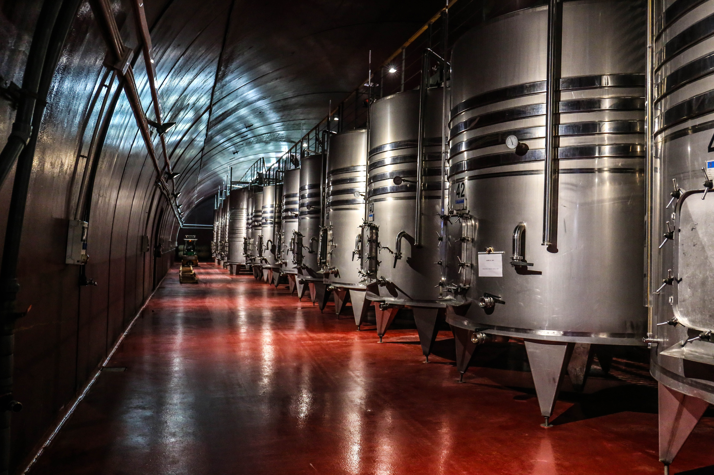
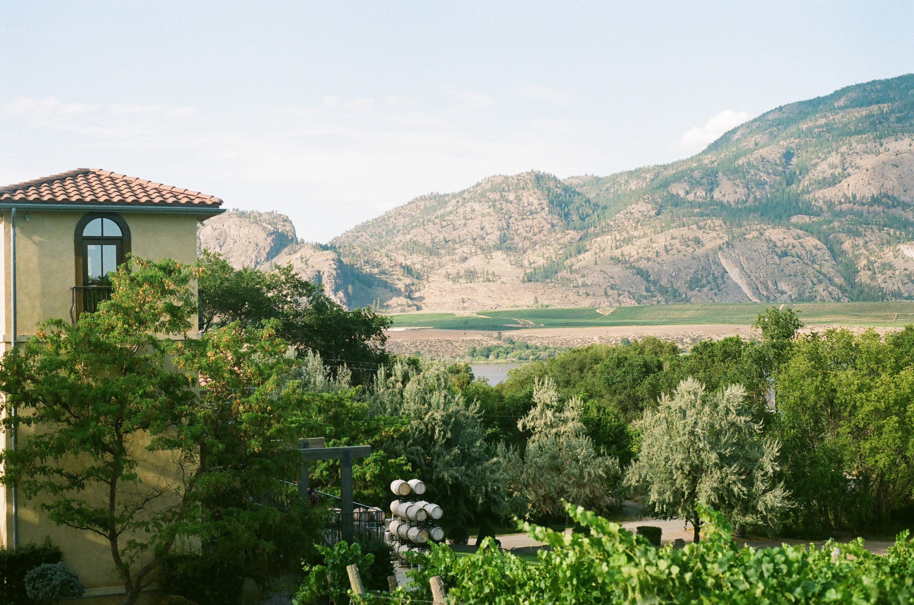

Bodega Village Wine
Nuestra bodega nace como un emprendimiento familiar. En nuestro caso, impulsado por el amor hacia el
campo y sus frutos. Crecimos de la mano de una premisa fundamental: el trabajo a pequeña escala
ofrece siempre mejores resultados. Para lograrlo, cuidamos y seguimos todo el proceso celosamente,
desde el viñedo hasta la copa. Creemos que este es el camino para, a largo plazo, reflejar en
nuestros vinos la personalidad que nos identifica.


Bodega Cave Reseve
Nuestra bodega tiene una extensión de 50 hectáreas ubicadas en el casco de estancia original de 1909
una de las primeras bodegas del país. Fieles a la tradición en 1990 el casco es reciclado, en 1998
se inicia la plantación de viñedos y en el 2010 comenzamos la construcción de una nueva bodega
dentro del casco original para la elaboración exclusiva de vinos de alta gama.
También contamos con pequeñas extensiones de árboles frutales que conviven con los viñedos
destinados a la elaboración de mermeladas y almíbares. Así como la producción de galletas, quesos,
pasta seca y aceite de oliva.
En nuestra bodega todos los sentidos se activan para poder vivir una experiencia sensorial única, la
degustación y los aromas son parte esencial de nuestra tarea.

